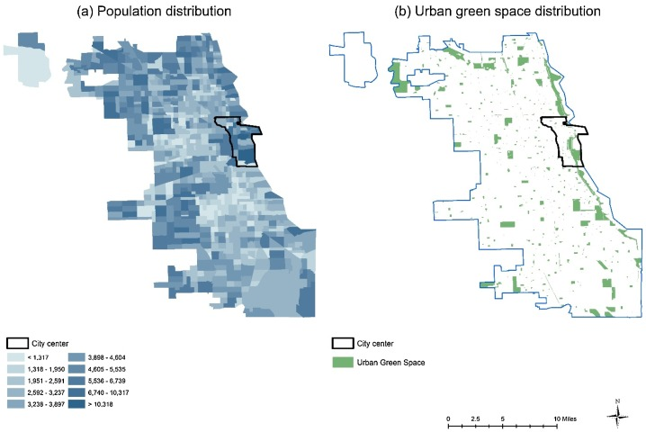
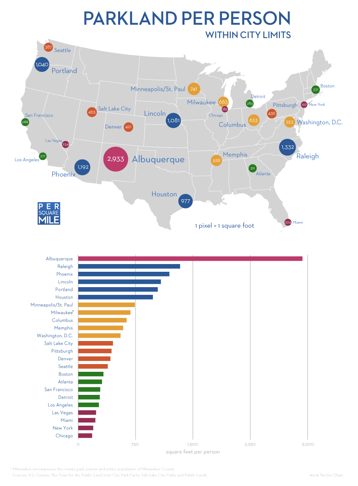

Introduction In this article, we will be taking a look at the following dataset which outlines information on current green spaces on rooftops in Chicago. These areas provide Chicago residents with green spaces that people can work in and spend leisure time. As we can see from the table, the city is filled with green spaces for its residents. Chicago has recently announced a commitment to increase the amount of green areas within the city and here we will be able to explore these areas.
ID HOUSE_NUMBER PRE_DIR STREET_NAME STREET_TYPE FULL_ADDRESS_RANGE BUILDING_NAME1 BUILDING_NAME2 MONTH_VIEW TOTAL_ROOF_SQFT VEGETATED_SQFT FACT_SHEET LATITUDE LONGITUDE LOCATION 123 11600 S MARSHFIELD AVE 11600-11750 S MARSHFIELD AVE August 2010 251665 41916 https://gisapps.cityofchicago.org/gisimages/Greenroofs/VR_123.pdf 41.68024732 -87.66462883 (41.68024732, -87.66462883) 355 5641 N KENMORE AVE 5641-5641 N KENMORE AVE August 2010 5197 2470 https://gisapps.cityofchicago.org/gisimages/Greenroofs/VR_355.pdf 41.98498146 -87.65614925 (41.98498146, -87.65614925) 83 1307 W WRIGHTWOOD AVE 1307-1311 W WRIGHTWOOD AVE August 2010 13457 978 https://gisapps.cityofchicago.org/gisimages/Greenroofs/VR_083.pdf 41.92832501 -87.66136808 (41.92832501, -87.66136808) 310 115 W CHICAGO AVE 115-115 W CHICAGO AVE ACCESS LIVING August 2010 10379 6925 https://gisapps.cityofchicago.org/gisimages/Greenroofs/VR_310.pdf 41.89631036 -87.6319193 (41.89631036, -87.6319193) 216 651 E 38TH ST 651-651 E 38TH ST August 2010 7223 2481 https://gisapps.cityofchicago.org/gisimages/Greenroofs/VR_216.pdf 41.82557198 -87.61114043 (41.82557198, -87.61114043) 223 3809 S VINCENNES AVE 3809-3809 S VINCENNES AVE August 2010 3516 978 https://gisapps.cityofchicago.org/gisimages/Greenroofs/VR_223.pdf 41.82510339 -87.61255824 (41.82510339, -87.61255824) 233 4487 S STATE ST 4487-4487 S STATE ST August 2010 5225 3886 https://gisapps.cityofchicago.org/gisimages/Greenroofs/VR_233.pdf 41.81368058 -87.62650477 (41.81368058, -87.62650477) 101 1211 W ROOSEVELT RD 1211-1211 W ROOSEVELT RD August 2010 14773 7179 https://gisapps.cityofchicago.org/gisimages/Greenroofs/VR_101.pdf 41.8666502 -87.65701767 (41.8666502, -87.65701767) 69 4500 N BROADWAY 4500-4500 N BROADWAY August 2010 16712 14352 https://gisapps.cityofchicago.org/gisimages/Greenroofs/VR_069.pdf 41.9638281 -87.65689909 (41.9638281, -87.65689909) 139 365 N JEFFERSON ST 365-365 N JEFFERSON ST August 2010 37927 12286 https://gisapps.cityofchicago.org/gisimages/Greenroofs/VR_139.pdf 41.88865292 -87.64216142 (41.88865292, -87.64216142) 102 1402 W 19TH ST 1402-1402 W 19TH ST August 2010 1593 1151 https://gisapps.cityofchicago.org/gisimages/Greenroofs/VR_102.pdf 41.85594698 -87.66158668 (41.85594698, -87.66158668) 348 924 N CLARK ST 924-924 N CLARK ST August 2010 4261 957 https://gisapps.cityofchicago.org/gisimages/Greenroofs/VR_348.pdf 41.89955299 -87.63189495 (41.89955299, -87.63189495) 334 3448 E CHELTENHAM PL 3448-3448 E CHELTENHAM PL September 2010 1788 1478 https://gisapps.cityofchicago.org/gisimages/Greenroofs/VR_334.pdf 41.75442313 -87.54549379 (41.75442313, -87.54549379) 250 630 S MICHIGAN AVE 630-630 S MICHIGAN AVE August 2010 13156 4611 https://gisapps.cityofchicago.org/gisimages/Greenroofs/VR_250.pdf 41.87399442 -87.62475756 (41.87399442, -87.62475756) 235 542 S CALUMET AVE 542-542 S CALUMET AVE August 2010 12343 5266 https://gisapps.cityofchicago.org/gisimages/Greenroofs/VR_235.pdf 41.79879072 -87.61729444 (41.79879072, -87.61729444) 0 330 N GREEN ST 330-330 N GREEN ST August 2010 48806 13582 https://gisapps.cityofchicago.org/gisimages/Greenroofs/VR_000.pdf 41.88781649 -87.64912988 (41.88781649, -87.64912988) 88 1140 N NORTH BRANCH ST 1140-1140 N NORTH BRANCH ST August 2010 7944 7897 https://gisapps.cityofchicago.org/gisimages/Greenroofs/VR_088.pdf 41.90236548 -87.65544705 (41.90236548, -87.65544705) 353 505 N MCCLURG CT 505-505 N MCCLURG CT PARKVIEW WEST August 2010 109692 72791 https://gisapps.cityofchicago.org/gisimages/Greenroofs/VR_353.pdf 41.89145603 -87.61640368 (41.89145603, -87.61640368) 171 181 N CLARK ST 181-191 N CLARK ST 181 NORTH CLARK August 2010 30809 12028 https://gisapps.cityofchicago.org/gisimages/Greenroofs/VR_171.pdf 41.8856067 -87.63038748 (41.8856067, -87.63038748) 116 2839 W 79TH ST 2839-2839 W 79TH ST August 2010 12600 8950 https://gisapps.cityofchicago.org/gisimages/Greenroofs/VR_116.pdf 41.7496742 -87.69322964 (41.7496742, -87.69322964)
Interactive Data Use this slider to explore the different green spaces listed by the table. The slider can be dragged to filter the different green spaces by total vegetated square footage.
Vegetated Square Footage:
0.00 ID HOUSE_NUMBER PRE_DIR STREET_NAME STREET_TYPE FULL_ADDRESS_RANGE BUILDING_NAME1 BUILDING_NAME2 MONTH_VIEW TOTAL_ROOF_SQFT VEGETATED_SQFT FACT_SHEET LATITUDE LONGITUDE LOCATION 123 11600 S MARSHFIELD AVE 11600-11750 S MARSHFIELD AVE August 2010 251665 41916 https://gisapps.cityofchicago.org/gisimages/Greenroofs/VR_123.pdf 41.68024732 -87.66462883 (41.68024732, -87.66462883) 355 5641 N KENMORE AVE 5641-5641 N KENMORE AVE August 2010 5197 2470 https://gisapps.cityofchicago.org/gisimages/Greenroofs/VR_355.pdf 41.98498146 -87.65614925 (41.98498146, -87.65614925) 83 1307 W WRIGHTWOOD AVE 1307-1311 W WRIGHTWOOD AVE August 2010 13457 978 https://gisapps.cityofchicago.org/gisimages/Greenroofs/VR_083.pdf 41.92832501 -87.66136808 (41.92832501, -87.66136808) 310 115 W CHICAGO AVE 115-115 W CHICAGO AVE ACCESS LIVING August 2010 10379 6925 https://gisapps.cityofchicago.org/gisimages/Greenroofs/VR_310.pdf 41.89631036 -87.6319193 (41.89631036, -87.6319193) 216 651 E 38TH ST 651-651 E 38TH ST August 2010 7223 2481 https://gisapps.cityofchicago.org/gisimages/Greenroofs/VR_216.pdf 41.82557198 -87.61114043 (41.82557198, -87.61114043) 223 3809 S VINCENNES AVE 3809-3809 S VINCENNES AVE August 2010 3516 978 https://gisapps.cityofchicago.org/gisimages/Greenroofs/VR_223.pdf 41.82510339 -87.61255824 (41.82510339, -87.61255824) 233 4487 S STATE ST 4487-4487 S STATE ST August 2010 5225 3886 https://gisapps.cityofchicago.org/gisimages/Greenroofs/VR_233.pdf 41.81368058 -87.62650477 (41.81368058, -87.62650477) 101 1211 W ROOSEVELT RD 1211-1211 W ROOSEVELT RD August 2010 14773 7179 https://gisapps.cityofchicago.org/gisimages/Greenroofs/VR_101.pdf 41.8666502 -87.65701767 (41.8666502, -87.65701767) 69 4500 N BROADWAY 4500-4500 N BROADWAY August 2010 16712 14352 https://gisapps.cityofchicago.org/gisimages/Greenroofs/VR_069.pdf 41.9638281 -87.65689909 (41.9638281, -87.65689909) 139 365 N JEFFERSON ST 365-365 N JEFFERSON ST August 2010 37927 12286 https://gisapps.cityofchicago.org/gisimages/Greenroofs/VR_139.pdf 41.88865292 -87.64216142 (41.88865292, -87.64216142) 102 1402 W 19TH ST 1402-1402 W 19TH ST August 2010 1593 1151 https://gisapps.cityofchicago.org/gisimages/Greenroofs/VR_102.pdf 41.85594698 -87.66158668 (41.85594698, -87.66158668) 348 924 N CLARK ST 924-924 N CLARK ST August 2010 4261 957 https://gisapps.cityofchicago.org/gisimages/Greenroofs/VR_348.pdf 41.89955299 -87.63189495 (41.89955299, -87.63189495) 334 3448 E CHELTENHAM PL 3448-3448 E CHELTENHAM PL September 2010 1788 1478 https://gisapps.cityofchicago.org/gisimages/Greenroofs/VR_334.pdf 41.75442313 -87.54549379 (41.75442313, -87.54549379) 250 630 S MICHIGAN AVE 630-630 S MICHIGAN AVE August 2010 13156 4611 https://gisapps.cityofchicago.org/gisimages/Greenroofs/VR_250.pdf 41.87399442 -87.62475756 (41.87399442, -87.62475756) 235 542 S CALUMET AVE 542-542 S CALUMET AVE August 2010 12343 5266 https://gisapps.cityofchicago.org/gisimages/Greenroofs/VR_235.pdf 41.79879072 -87.61729444 (41.79879072, -87.61729444) 0 330 N GREEN ST 330-330 N GREEN ST August 2010 48806 13582 https://gisapps.cityofchicago.org/gisimages/Greenroofs/VR_000.pdf 41.88781649 -87.64912988 (41.88781649, -87.64912988) 88 1140 N NORTH BRANCH ST 1140-1140 N NORTH BRANCH ST August 2010 7944 7897 https://gisapps.cityofchicago.org/gisimages/Greenroofs/VR_088.pdf 41.90236548 -87.65544705 (41.90236548, -87.65544705) 353 505 N MCCLURG CT 505-505 N MCCLURG CT PARKVIEW WEST August 2010 109692 72791 https://gisapps.cityofchicago.org/gisimages/Greenroofs/VR_353.pdf 41.89145603 -87.61640368 (41.89145603, -87.61640368) 171 181 N CLARK ST 181-191 N CLARK ST 181 NORTH CLARK August 2010 30809 12028 https://gisapps.cityofchicago.org/gisimages/Greenroofs/VR_171.pdf 41.8856067 -87.63038748 (41.8856067, -87.63038748) 116 2839 W 79TH ST 2839-2839 W 79TH ST August 2010 12600 8950 https://gisapps.cityofchicago.org/gisimages/Greenroofs/VR_116.pdf 41.7496742 -87.69322964 (41.7496742, -87.69322964)
Table filter by location Search by street name:
Search by house number:
ID HOUSE_NUMBER PRE_DIR STREET_NAME STREET_TYPE FULL_ADDRESS_RANGE BUILDING_NAME1 BUILDING_NAME2 MONTH_VIEW TOTAL_ROOF_SQFT VEGETATED_SQFT FACT_SHEET LATITUDE LONGITUDE LOCATION 123 11600 S MARSHFIELD AVE 11600-11750 S MARSHFIELD AVE August 2010 251665 41916 https://gisapps.cityofchicago.org/gisimages/Greenroofs/VR_123.pdf 41.68024732 -87.66462883 (41.68024732, -87.66462883) 355 5641 N KENMORE AVE 5641-5641 N KENMORE AVE August 2010 5197 2470 https://gisapps.cityofchicago.org/gisimages/Greenroofs/VR_355.pdf 41.98498146 -87.65614925 (41.98498146, -87.65614925) 83 1307 W WRIGHTWOOD AVE 1307-1311 W WRIGHTWOOD AVE August 2010 13457 978 https://gisapps.cityofchicago.org/gisimages/Greenroofs/VR_083.pdf 41.92832501 -87.66136808 (41.92832501, -87.66136808) 310 115 W CHICAGO AVE 115-115 W CHICAGO AVE ACCESS LIVING August 2010 10379 6925 https://gisapps.cityofchicago.org/gisimages/Greenroofs/VR_310.pdf 41.89631036 -87.6319193 (41.89631036, -87.6319193) 216 651 E 38TH ST 651-651 E 38TH ST August 2010 7223 2481 https://gisapps.cityofchicago.org/gisimages/Greenroofs/VR_216.pdf 41.82557198 -87.61114043 (41.82557198, -87.61114043) 223 3809 S VINCENNES AVE 3809-3809 S VINCENNES AVE August 2010 3516 978 https://gisapps.cityofchicago.org/gisimages/Greenroofs/VR_223.pdf 41.82510339 -87.61255824 (41.82510339, -87.61255824) 233 4487 S STATE ST 4487-4487 S STATE ST August 2010 5225 3886 https://gisapps.cityofchicago.org/gisimages/Greenroofs/VR_233.pdf 41.81368058 -87.62650477 (41.81368058, -87.62650477) 101 1211 W ROOSEVELT RD 1211-1211 W ROOSEVELT RD August 2010 14773 7179 https://gisapps.cityofchicago.org/gisimages/Greenroofs/VR_101.pdf 41.8666502 -87.65701767 (41.8666502, -87.65701767) 69 4500 N BROADWAY 4500-4500 N BROADWAY August 2010 16712 14352 https://gisapps.cityofchicago.org/gisimages/Greenroofs/VR_069.pdf 41.9638281 -87.65689909 (41.9638281, -87.65689909) 139 365 N JEFFERSON ST 365-365 N JEFFERSON ST August 2010 37927 12286 https://gisapps.cityofchicago.org/gisimages/Greenroofs/VR_139.pdf 41.88865292 -87.64216142 (41.88865292, -87.64216142) 102 1402 W 19TH ST 1402-1402 W 19TH ST August 2010 1593 1151 https://gisapps.cityofchicago.org/gisimages/Greenroofs/VR_102.pdf 41.85594698 -87.66158668 (41.85594698, -87.66158668) 348 924 N CLARK ST 924-924 N CLARK ST August 2010 4261 957 https://gisapps.cityofchicago.org/gisimages/Greenroofs/VR_348.pdf 41.89955299 -87.63189495 (41.89955299, -87.63189495) 334 3448 E CHELTENHAM PL 3448-3448 E CHELTENHAM PL September 2010 1788 1478 https://gisapps.cityofchicago.org/gisimages/Greenroofs/VR_334.pdf 41.75442313 -87.54549379 (41.75442313, -87.54549379) 250 630 S MICHIGAN AVE 630-630 S MICHIGAN AVE August 2010 13156 4611 https://gisapps.cityofchicago.org/gisimages/Greenroofs/VR_250.pdf 41.87399442 -87.62475756 (41.87399442, -87.62475756) 235 542 S CALUMET AVE 542-542 S CALUMET AVE August 2010 12343 5266 https://gisapps.cityofchicago.org/gisimages/Greenroofs/VR_235.pdf 41.79879072 -87.61729444 (41.79879072, -87.61729444) 0 330 N GREEN ST 330-330 N GREEN ST August 2010 48806 13582 https://gisapps.cityofchicago.org/gisimages/Greenroofs/VR_000.pdf 41.88781649 -87.64912988 (41.88781649, -87.64912988) 88 1140 N NORTH BRANCH ST 1140-1140 N NORTH BRANCH ST August 2010 7944 7897 https://gisapps.cityofchicago.org/gisimages/Greenroofs/VR_088.pdf 41.90236548 -87.65544705 (41.90236548, -87.65544705) 353 505 N MCCLURG CT 505-505 N MCCLURG CT PARKVIEW WEST August 2010 109692 72791 https://gisapps.cityofchicago.org/gisimages/Greenroofs/VR_353.pdf 41.89145603 -87.61640368 (41.89145603, -87.61640368) 171 181 N CLARK ST 181-191 N CLARK ST 181 NORTH CLARK August 2010 30809 12028 https://gisapps.cityofchicago.org/gisimages/Greenroofs/VR_171.pdf 41.8856067 -87.63038748 (41.8856067, -87.63038748) 116 2839 W 79TH ST 2839-2839 W 79TH ST August 2010 12600 8950 https://gisapps.cityofchicago.org/gisimages/Greenroofs/VR_116.pdf 41.7496742 -87.69322964 (41.7496742, -87.69322964)
Graph of vegetated square feet by street X axis: Green space ID (see table) Y axis: Vegetated square feet 103RD 104TH 111TH 113TH 116TH 119TH 14TH 19TH 21ST 24TH 26TH 37TH 38TH 45TH 47TH 55TH 57TH 59TH 61ST 63RD 64TH 71ST 72ND 75TH 79TH 80TH 87TH 93RD 95TH A.R.F.F. #3 ADAMS ADDISON AINSLIE ALTGELD ARTHINGTON ARTHUR ASHLAND ASTOR BALBO BELDEN BELMONT BLACKHAWK BLACKSTONE BLUE ISLAND BROADWAY CALIFORNIA CALUMET CANNON CATALPA CENTRAL CHAMPLAIN CHARLESTON CHELTENHAM CHICAGO CICERO CLARK CLYBOURN COLUMBUS CONGRESS CORNELL COTTAGE GROVE DAMEN DANTE DEARBORN DELAWARE DESPLAINES DEVON DOMINICK DREXEL ELLIS ELSTON ERIE FAIRBANKS FAIRFIELD FOSTER FREMONT FULLERTON GARLAND GOETHE GRACE GRAND GREEN HALSTED HARRISON HOLLAND HOMAN HOMER HOWARD HURON HYDE PARK ILLINOIS INDIANA INGLESIDE JACKSON JEFFERSON KEDZIE KENMORE KIMBALL KINGSBURY KINZIE KOSTNER LA SALLE LAKE LAKE SHORE LANGLEY LASALLE LAWRENCE LEAVITT LELAND LILL LINCOLN LINCOLN PARK LINCOLN PARK ZOO #1 LINCOLN PARK ZOO #2 LITHUANIAN PLAZA LOGAN LOYOLA MADISON MAPLEWOOD MARINE MARQUETTE MARSHFIELD MAYPOLE MC CLURG MCCLURG MELROSE MICHIGAN MILWAUKEE MONROE MONTROSE MORGAN MUSEUM CAMPUS NARRAGANSETT NORTH NORTH BRANCH O'HARE BLDG 7 O'HARE BLDG 8 OAK OAK PARK OHARE BLDG 1 OHARE BLDG 2 OHARE BLDG 3 OHARE BLDG 4 OHARE BLDG 5 OHARE BLDG 6 OHIO ONTARIO ORCHARD ORLEANS PAULINA PEARSON PERSHING PETERSON POLK PRAIRIE PULASKI RANDOLPH RAVENSWOOD ROCKWELL ROOSEVELT ROSCOE RUSH SACRAMENTO SANGAMON SAWYER SHERIDAN SHORE SOUTHPORT SPAULDING SPRINGFIELD ST LOUIS STATE STONY ISLAND SUPERIOR VAN BUREN VINCENNES WABASH WACKER WALTON WASHINGTON WASHTENAW WELLS WHIPPLE WINONA WOLCOTT WOODLAWN WRIGHTWOOD 100 200 300 20,000 40,000 60,000 80,000 100,000 120,000
Contextual Data 
In this visualization, created by ScienceDirect.com, we can see how the city’s population correlates to urban green spaces. As we can see, more densily populated areas, such as by the shore of Lake Michigan, offer many more green spaces than areas that are less populated.

As this visualization shows, despite Chicago’s recent efforts to maximize green spaces, many other cities within the U.S. have much more space dedicated to green areas. This may be because of the density and lack of space within the city or because of Chicago’s high population.
This interactive map shows the current locations of the green spaces listed by the table above:
Map of Green roof spaces in Chicago - Chicago Data Portal
In addition to the Green roof spaces map, this map contains all Chicago parks and open recreational areas across the city:
Parks and Recreation Areas in Chicago - Chicago Data Portal Write up To summarize, these datasets help us to understand the current state of public recreation in Chicago. Along with this, the data explored here gives a look into how Chicago us able to integrate green areas into its infrastructure. Opening and maintaining green areas, especially for such a large and sprawling city like Chicago, is a tall task that requires plenty of coordination and resources. However, Chicago, compared to other cities, offers residents a high amount of vegetated square footage and integrates lots of environmentally conscious places in the city.
The main dataset, along with the contextual data provided, gives us a look into the local ecosystem in addition to showing how the city plans for green areas to be integrated into the city plan. The parks, recreations, and green spaces present in Chicago make up a massive system of public recreation. This data gives users an opportunity to quckily and easily browse some of the areas and learn more about how the city puts its open spaces to use.
The goal for this page is for the user to be able to comb through such datasets and to be able to make sense of scattered data points in the table. The interactive features allow for a user to select the most relevant data from the table, such as location, size, and more. In addition to this, the contextual data hopefully helps paint a broader picture of the ecological system within Chicago and how these green rooftops fit in with the other environmentally-conscious areas.
Sources: {kind=link}